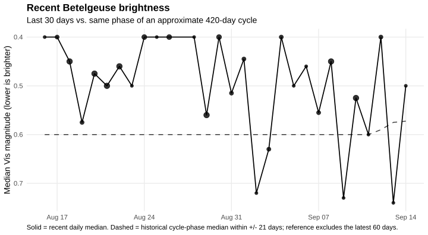
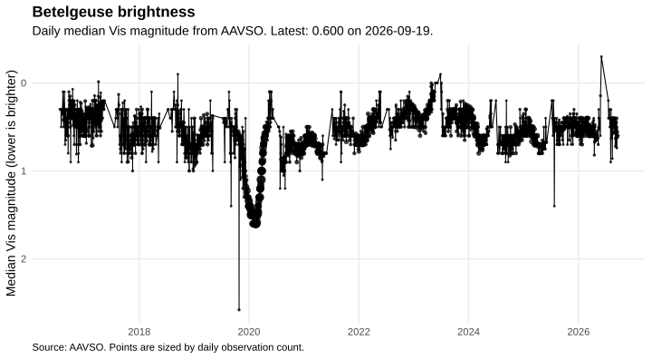

Beetlejuice Brightness
Daily visual magnitude summary for Betelgeuse / Alpha Orionis.
Latest dateLoading...
Median magnitudeLoading...
Observations that dayLoading...
Stored daysLoading...
Recent focus

Dashed reference uses previous observations at a similar phase of an approximate 420-day brightness cycle. Treat it as context, not a prediction.
Past 10 calendar days
| Date | Median mag | Obs | Cycle ref | Delta |
|---|---|---|---|---|
| Loading... |
Reading data/recent_brightness.json...
Long-term brightness

Reading data/daily_brightness.json...
Magnitude is inverted: lower numbers mean brighter. The graphs are generated with R and ggplot2.